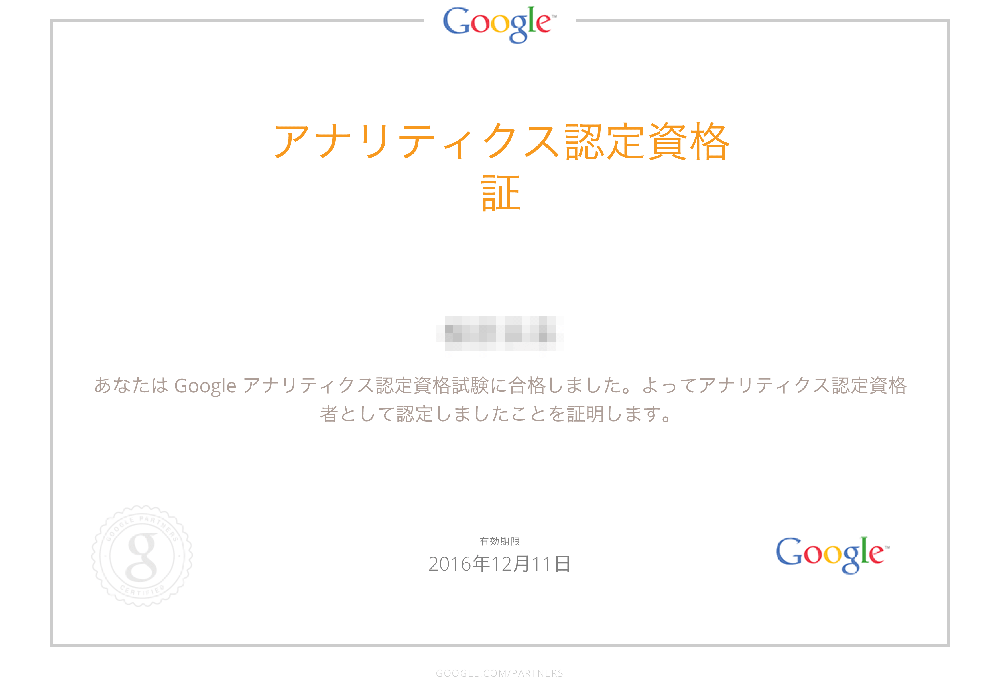

社内の流行りが終わってて、自慢する場所がないのでここに書く。笑
GAIQって？
Googleアナリティクス(GA)の個人認定資格。
昔は受験するのにお金がかかって問題文も英語だったけど、今では無料 & 日本語に。気軽に受けられるね！
受験方法とかは詳しく書いてるサイトたくさんあるんでそっち見てください。
こことか。→ ★
ドメイン的に公式かと思いきや、違ったｗ
そして会社名… 某りんご会社のサービスを思い浮かぶ名前だなぁ… (遠い目
GAIQに受かるまでにやったこと
アカデミーの動画眺める。コレ→ ★
英語聞き取れない人は日本語の字幕設定した方が楽だよ！
これのUnit4の2個目までみて飽きた。笑
そしてそのまま1回も受験せずに1ヶ月くらい放置。笑
なんとなく、一発合格したかってん…動画全部見てから受けようと思ってん…
そんなこんなで、1ヶ月放置してても一発合格できました( •́ㅂ•̀)وいえーい

ぶっちゃけ
動画見なくても問題文ぐぐれば半分以上は答え分かる。笑
ってことで一旦受けてみるのが良いと思う！
でもこの資格って・・・何に使えるの？щ(ﾟДﾟщ)
Please comment!